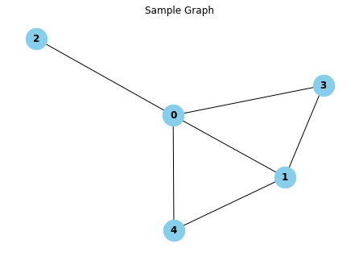

\(S[u,v]\)는 노드 \(u\)와 \(v\) 사이 관계를 정량화한 값을 나타내며, \(S \in \mathbb{R}^{|\mathcal{V}| \times |\mathcal{V}|}\)는 모든 쌍별(pairwise) 노드 통계량을 요약하는 유사도 행렬(similarity matrix)이다.
import networkx as nximport numpy as npimport matplotlib.pyplot as plt# Sample graph 생성n =5# 노드 개수m =2# 새로운 노드에 연결되는 엣지 수G = nx.barabasi_albert_graph(n, m)# 시각화pos = nx.spring_layout(G) # 그래프 레이아웃 정의# 노드 및 엣지 그리기nx.draw(G, pos, with_labels=True, node_size=700, node_color="skyblue", font_size=12, font_weight="bold")plt.title("Sample Graph")plt.show()

관계 예측(relation prediction)에 사용
이웃 중복도 \(S[u,v]\)가 주어졌을 때, 엣지 \((u,v)\)의 가능도(likelihood)가 \(S[u,v]\)에 단순 비례한다고 가정하고는 한다. \[P(A[u,v]=1) \propto S[u,v]\]
따라서, 이웃 중복도는 관계 예측을 할 때 언제 엣지가 존재하는 것으로 예측할지 결정하기 위한 임계값을 설정하는 역할을 한다.
관계 예측을 설정할 때에는 일반적으로 실제 엣지의 하위 집합 \(\mathcal{E}_{train} \subset \mathcal{E}\)만 알고 있다고 가정하고, 훈련 엣지에서 계산된 노드-노드 유사성 측정이 테스트 엣지의 존재에 대한 정확한 예측으로 이어지는 것이 목표이다.
Local Overlap Measures
로컬(local) 중복도는 두 노드가 공유하는 공통 이웃의 수의 함수이다.
예를 들어, Sorensen index는 노드-노드 이웃 중복의 행렬은 공통 이웃 수를 노드 degree의 합으로 정규화한다(큰 degree의 노드에 대한 예측 bias 방지). \[S_{\text{Sorenson}}[u,v] = \frac{2|\mathcal{N}(u) \cap \mathcal{N}(u)|}{d_u + d_v}\]
비슷한 방법으로 Salton index, Jaccard overlap가 있다. \[S_{\text{Salton}}[u,v] = \frac{2|\mathcal{N}(u) \cap \mathcal{N}(u)|}{\sqrt{d_ud_v}}\]\[S_{\text{Jaccard}}[u,v] = \frac{|\mathcal{N}(u) \cap \mathcal{N}(u)|}{|\mathcal{N}(u) \cup \mathcal{N}(u)|}\]
또한, 공통 이웃 수가 아닌 공통 이웃의 중요도를 고려하는 방법도 있다. degree가 낮은 공통 이웃(더 informative할 것이라고 가정)에 가중을 준다.
Resource allocation(RA) index는 공통 이웃의 역 차수(inverse degree)를 카운트한다. \[ S_{RA}[v_1,v_2] = \sum_{u \in \mathcal{N}(v_1) \cap \mathcal{N}(v_2)} \frac{1}{d_u} \]
Adamic-Adar(AA) index는 공통 이웃의 역 로그 차수를 카운트한다. \[ S_{AA}[v_1,v_2] = \sum_{u \in \mathcal{N}(v_1) \cap \mathcal{N}(v_2)} \frac{1}{\log(d_u)} \]
# 두 노드 간의 Jaccard 유사도 계산def jaccard_similarity(G, node1, node2): neighbors1 =set(G.neighbors(node1)) neighbors2 =set(G.neighbors(node2)) intersection =len(neighbors1.intersection(neighbors2)) union =len(neighbors1.union(neighbors2))if union ==0:return0return intersection / union# 유사도 행렬 생성nodes =list(G.nodes())num_nodes =len(nodes)similarity_matrix = np.zeros((num_nodes, num_nodes))for i inrange(num_nodes):for j inrange(num_nodes): similarity_matrix[i, j] = jaccard_similarity(G, nodes[i], nodes[j])print("Jaccard 유사도 행렬:")print(similarity_matrix)
\(\beta \in \mathbb{R}^+ (<1)\)는 사용자 설정값으로 길이간 긴 경로에 더 낮은 가중치를 부여한다.
Katz index의 해답은 다음과 같이 주어질 수 있다:
\[S_{\text{Katz}} = (I-\beta A)^{-1}-I\]
\(S_{\text{Katz}} \in \mathbb{R}^{|\mathcal{V}| \times |\mathcal{V}|}\)는 노드-노드 유사도 값의 full 행렬이다.
Leicht, Holme, and Newman (LHN) Similarity
Katz Index는 노드 degree에 강하게 편향되어 있다. 이에 Leicht et al.(2006)은 실제 관찰된 경로 수와 두 노드 간 기대 경로 수의 비율을 제시했다. 즉, 두 노드 간 경로의 수를 랜덤모형에서의 경로 수 기대값으로 정규화하는 것이다.
\[\frac{A^i}{\mathbb{E}[A^i]}\]
\({\mathbb{E}[A^i]}\)를 계산하기 위해 configuration model을 이용하여 analytical하게 구한다: \[\mathbb{E}[A[u,v]] = \frac{d_u d_v}{2m}\] - \(m=|\mathcal{E}|\)는 그래프의 엣지 전체 수를 의미한다. - 위 식은 랜덤 configuration model에서 엣지의 가능도(likelihood)는 단순히 두 노드 degree의 곱임을 뜻한다. - 또한 \(d_u\)개 엣지가 \(u\)를 출발하여 \(\frac{d_v}{2m}\)의 확률로 \(v\)에 도착한다고 볼 수 있다.
길이 2의 경로의 경우, \[ \mathbb{E}[A^2[v_1,v_2]] = \frac{d_{v_1} d_{v_2}}{(2m)^{2}} \sum_{u \in \mathcal{V}} (d_u-1) d_u \] 와 같으며, 길이가 3이상일 경우는 처리하기 어려워진다. 단, 근사값으로, \[ \mathbb{E}[A^i[u,v]] = \frac{d_u d_v \lambda^{i-1}}{2m} \]로 나타낼 수 있다.
‘Personalized PageRank’ 알고리즘(Leskovec et al., 2020)을 사용하면 확률(stochastic) 행렬 \(P=AD^{-1}\)가 있을 때, 랜덤워크가 노드 \(u\)에서 \(v\)로 가는 확률 \(\mathbf{q}_u[v]\)를 다음과 같이 구한다.